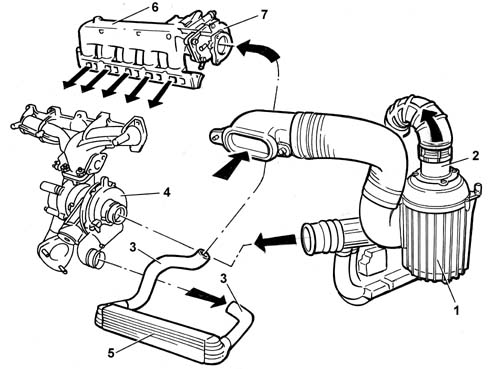
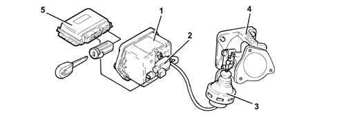

CONSTRUCTION SPECIFICATIONS
- Path
- Descriptions > 10 ENGINE > 1048 ENGINE AIR SUPPLY CIRCUIT > CONSTRUCTION SPECIFICATIONS
- Kind
- system description
- Applies to
- engines: 2.4 JTD 10V; all production periods
- Interactive page
- https://sloeber94.github.io/elrnDB-lThss/en/#/607290
Applies to: engines: 2.4 JTD 10V; all production periods
Intake air is filtered and conveyed to the exhaus gas turbocharger.
Before reaching the engine, compressed air is cooled by an air-air heat exchanger.

- 1. Filter assembly
- 2. Flow meter
- 3. Sleeves
- 4. Turbocharger
- 5, Air/air heat exchanger (intercooler)
- 6, Intake chamber
- 7, Throttle body
THROTTLE BODY
Construction specifications
To reduce engine noise during shut-down (noise generated by dual-weight flywheel DVA), a throttle has been fitted in the intake duct to close off air flow to the cylinders.
Composition

- 1. throttle body,
- 2. pneumatic actuator;
- 3. pipe connecting pneumatic actuator accumulator to the Pierburg solenoid;
- 4. Pierburg solenoid controlled by the engine control unit that sends a vacuum to the pneumatic actuator
- 5. pipe connecting the Pierburg solenoid to the vacuum reservoir
- 6. pipe connecting vacuum reservoir to vacuum pump.
Operation
When the engine is off, the throttle is open because no vacuum is present.
When the engine is running, the throttle is open because the deactivated Pierburg valve closes off the vacuum from the pneumatic actuator.
A vacuum builds up during engine operation.
When the engine is turned off (the key is turned OFF), the control unit keeps the actuator supply relay supplied 4 or 5 seconds longer and simultaneously earths the Pierburg valve. The valve then opens to send a vacuum to the pneumatic actuator which closes the throttle to cut off the air flow to the cylinders.